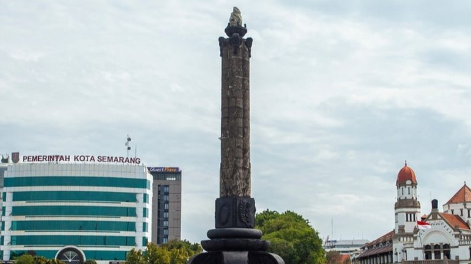
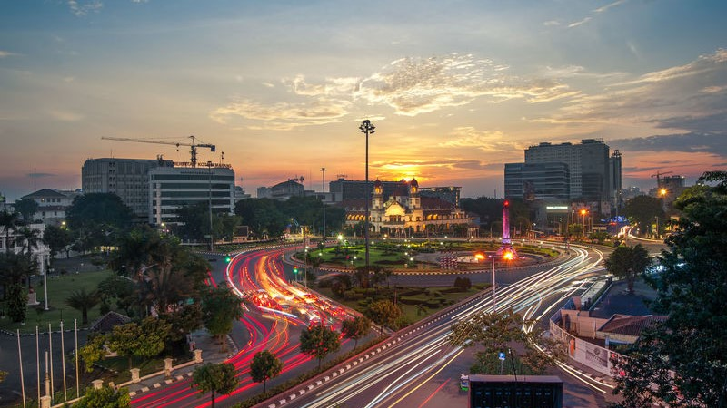

Sejarah

Nama Semarang berasal dari kata "asem" dan "arang," yang berarti "jarang terdapat pohon asem" di wilayah tersebut pada masa lampau. Berdasarkan cerita sejarah, kota ini didirikan oleh Ki Ageng Pandanaran, seorang tokoh dari Mataram, yang mengembangkan daerah ini menjadi pusat perdagangan. Pada masa kolonial Belanda, Semarang menjadi pusat administrasi dan perdagangan yang penting, yang ditandai dengan berdirinya bangunan-bangunan bersejarah, seperti Lawang Sewu, Gereja Blenduk, dan Stasiun Tawang.
Geografis

Kota Semarang terletak di pesisir utara Pulau Jawa, dengan bagian utara berbatasan langsung dengan Laut Jawa.
Kota ini memiliki dataran rendah di bagian utara dan dataran tinggi di bagian selatan, yang sering disebut Semarang Atas. Wilayah Semarang bagian utara berada pada ketinggian 3 meter di atas permukaan laut, sementara Semarang bagian selatan mencapai ketinggian hingga 348 meter. Dengan karakteristik geografis ini, wilayah dataran rendah di Semarang Utara sering mengalami masalah rob atau banjir pasang air laut, terutama saat musim penghujan.
Wisata
Semarang dikenal dengan banyaknya destinasi wisata bersejarah, budaya, dan religi. Salah satu kawasan yang paling terkenal adalah Kota Lama,
di mana pengunjung bisa menikmati pemandangan arsitektur kolonial Belanda yang masih terawat dengan baik. Di tempat ini terdapat Lawang Sewu, bangunan bersejarah yang memiliki nilai arsitektur unik dan sarat cerita misteri. Selain itu, Semarang juga memiliki ikon wisata religi, yaitu Klenteng Sam Poo Kong dan Masjid Agung Jawa Tengah yang megah. Kota ini juga terkenal dengan wisata kuliner khasnya, seperti lumpia Semarang, tahu gimbal, dan bandeng presto.
Simpang Lima

Simpang Lima adalah alun-alun utama yang terletak di pusat kota Semarang. Tempat ini menjadi pusat aktivitas masyarakat setempat dan juga wisatawan. Di sekelilingnya terdapat pusat perbelanjaan, hotel, dan restoran, menjadikannya tempat yang ideal untuk berwisata dan bersantai. Pada malam hari, kawasan Simpang Lima hidup dengan beragam kuliner jalanan dan atraksi lokal yang menarik.
Kampung Pelangi

Terletak di kawasan Gunung Brintik, Kampung Pelangi merupakan objek wisata yang menarik dengan nuansa warna-warni pada setiap sudut rumah dan jalanannya. Kampung ini menjadi populer karena keunikannya dan banyak diminati sebagai spot foto Instagramable bagi para wisatawan yang berkunjung ke Semarang.